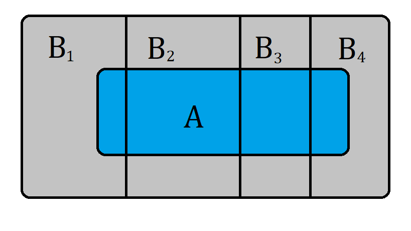
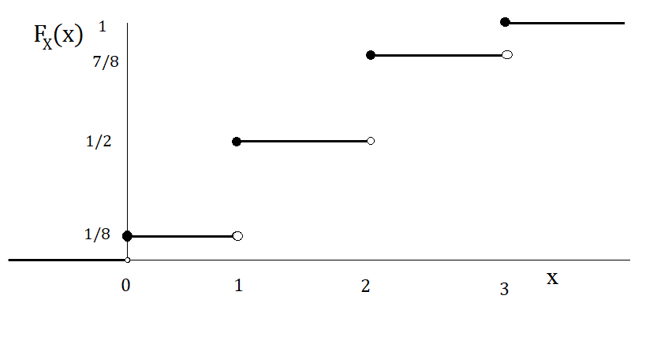
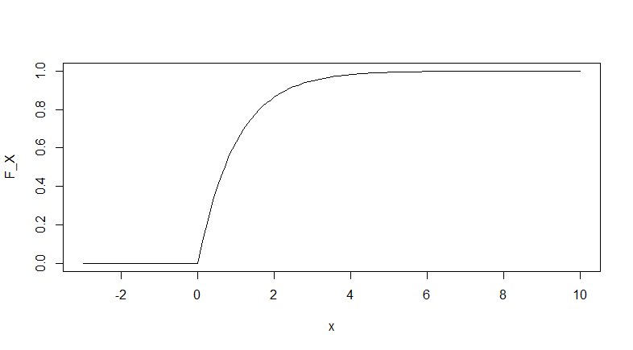

Introducción a la probabilidad
Definición de probabilidad¶
Imagen de ToNic-Pics en Pixabay
La probabilidad es una rama de las matemáticas que estudia el azar o aleatoriedad. En palabras simples, trata de medir la incertidumbre de que ocurra un suceso o evento \(E\). El resultado de dicho experimento \(E\) no puede ser determinado con antelación.
Para darnos una idea de lo que es la probabilidad, tienen dos definiciones:
Definición clásica (A priori)
Suponiendo que un evento \(E\) puede ocurrir de \(s\) formas de un total de \(n\) formas igualmente posibles. Entonces \(p=s/n\).
Definición frecuentista (A posteriori)
Suponiendo que después de \(n\) repeticiones, para valores muy grandes de \(n\), un evento \(E\) ocurre \(s\) veces. Entonces \(p=s/n\).
Estas definiciones a pesar de ser muy intuitivas, tienen grandes fallos. Por ejemplo, la primer definición es una definición circular, por que la frase igualmente posible es un sinónimo de igualmente probable, justo lo que se quiere definir. En la segunda definición no se especifican los valores de \(n\). Estas definiciones son muy antiguas, pero pueden ayudar a entender de forma muy general el concepto de probabilidad.
Actualmente el estudio de la probabilidad se realiza mediante el uso de la teoría de conjuntos, a partir de ciertos axiomas.
Espacio muestral y eventos¶
A continuación se presentarán algunas definiciones que serán de gran utilidad para conocer más de la probabilidad.
Espacio muestral
El conjunto \(\Omega\) de todos los resultados posibles de un experimento se denomina espacio muestral.
Evento
Un evento \(A\) es un subconjunto del espacio muestral \(\Omega\), es decir, es un conjunto de resultados. Cualquier colección de eventos y cada uno es un subconjunto de \(\Omega\) se denominará con \(\mathbb{s}\).
Evento particular
El evento \(\lbrace \omega \rbrace\) constituido por un solo punto \(\omega \in \Omega\) se denomina evento muestral o punto muestral.
Los conceptos presentados se ilustran con un experimento muy simple.
Lanzamiento de un dado
Considere el experimento de lanzar un dado de 6 caras.
Imagen de anncapictures en Pixabay.
El espacio muestral estaría formado por los seis resultados posibles del dado, es decir:
Un punto muestral podría ser un resultado en específico, por ejemplo \(\lbrace 1 \rbrace\). Todos los subconjuntos posibles de resultados consitituirían \(\mathbb{s}\).
Sean el evento \(A\) que el resultado sea par, el evento \(B\) que el resultado sea impar y el evento \(C\) que el resultado sea mayor a 3.
Entonces se tiene que
\(A=\lbrace 2,4,6 \rbrace, \\ B=\lbrace 1,3,5 \rbrace, \\ C=\lbrace 4,5,6 \rbrace\)
Observe que el evento \(B \cup C = \lbrace 1,3,4,5,6\rbrace\) también es un evento en el espacio muestral \(S\).
Axiomas de probabilidad¶
Como se mencionó anteriormente, actualmente la probabilidad se estudia de manera formal partiendo de 3 axiomas.
Conocimiento avanzado
El estudio de la probabilidad requiere conocimientos avanzados de Matemáticas y Teoría de Conjuntos los cuales están fuera del alcance de esta página.
Sea \(A\) un evento del espacio muestral \(\Omega\). Una función \(P: \mathbb{s} \rightarrow [0,1]\) es llamada función de probabilidad si satisface estas 3 condiciones.
- Axioma 1: \(0\le P(A) \le 1\) para \(A \in \mathbb{s}\)
- Axioma 2: \(P(\Omega) = 1\)
- Axioma 3: Para cualquier secuencia de eventos \(A_1,A_2,\dots\) mutuamente excluyentes, entonces
Se dice que \(P(A)\) es la probabilidad de que ocurra el evento A.
A partir de esos axiomas, se derivan otras propiedades.
- \(P(\emptyset)=0\).
- Si \(A_1,\dots,A_n\) son eventos mutuamente excluyentes, entonces \(P\left( \bigcup_{i=1}^{n} A_i\right)=\sum_{i=1}^{n}P(A_i)\).
- \(P(A^c)=1-P(A)\).
- Para cualesquiera 2 eventos: \(P(A \cup B) = P(A) + P(B) - P(A \cap B)\).
- Si \(A \subset B\), entonces \(P(A) < P(B)\).
Para ilustrar estas ideas, considere el siguiente ejemplo.
Función de probabilidad con probabilidades iguales
En ciertos problemas con espacios muestrales finitos \(\Omega = \lbrace \omega_1,\dots,\omega_n\rbrace\), es posible asignarle a cada uno de los puntos una probabilidad igual a \(1/n\). A esta función de probabilidad se le conoce como la funcion de probabilidad con probabilidades iguales y se define como:
\(P^*(A)=\frac{\#(A)}{n}\)
donde \(\#(A)\) es el número de elementos en \(A\) y \(n\) el número de elementos del espacio muestral \(\Omega\).
Se puede ver que la función de probabilidad cumple con todas las propiedades antes mencionadas, por lo que es posible calcular todas las probabilidades de varios eventos.
En el ejemplo de los dados, se puede asumir que la probabilidad de que se obtenga un resultado en particular es \(1/6\), por lo que la probabilidad de que caiga un número par es \(P^*(A) = 1/2\).
Probabilidad condicional¶
En ocasiones, es de interés conocer la probabilidad de un evento, dado que haya ocurrido otro. En este sentido, se define la probabilidad condicional.
Probabilidad condicional
Sean \(A\) y \(B\) dos eventos en \(\mathbb{s}\). La probabilidad condicional del evento \(A\) dado el evento \(B\), denotada por \(P\left( A|B \right)\), se define como \(P \left( A|B\right) =\frac{P\left(A\cap B\right)}{P\left( B\right)}\) con \(P(B) \ne 0\).
Note que la probabilidad anterior no está definida cuando \(P(B) = 0\). También se desprende la fórmula \(P(A \cap B )= P(A|B)P(B) = P(B|A)P(A)\) si \(P(A) \ne 0\).
De la definición anterior, se desprenden las siguientes propiedades de la función de probabilidad condicional
- \(P(\emptyset|B)=0\).
- Si \(A_1,A_2,\dots,A_n\) son eventos mutuamente excluyentes en \(\mathbb{s}\), entonces \(P(A_1 \cup A_2 \cup \dots \cup A_n|B) = \sum_{i=1}^{n}P(A_i|B)\).
- \(P(A^c|B)=1 - P(A|B)\).
- Si \(A_1\) y \(A_2 \in \mathbb{s}\), entonces \(P(A_1|B)=P(A_1 \cap A_2|B)+P(A_1 \cap A^c_2|B)\).
- Para cualesquiera 2 eventos \(A_1\) y \(A_2 \in \mathbb{s}\), \(P(A_1 \cup A_2 |B) = P(A_1|B)+P(A_2|B)-P(A_1 \cap A_2|B)\).
- Si \(A_1\) y \(A_2 \in \mathbb{s}\) y \(A_1 \subset A_2\), entonces \(P(A_1|B) \le P(A_2|B)\).
- Si \(A_1,A_2,\dots,A_n \in \mathbb{s}\), entonces \(P(A_1 \cup A_2 \cup \dots \cup A_n|B) \le \sum_{i=1}^{n}P(A_i|B)\).
A continuación se mencionan unos teoremas de gran importancia. La aplicación de dichos teoremas se ilustran con unos ejemplos
Teorema de probabilidades totales
Si \(B_1, B_2, \dots,B_n\) es una colección de eventos mutuamente disjuntos en \(\mathbb{s}\) y satisfacen \(\Omega = \cup^{n}_{j=1} B_j\) y \(P(B_j)>0\) para \(j = 1,\dots,n\), entonces para toda \(A \in \mathbb{s}\) se tiene \(P\left(A\right)=\sum^{n}_{j=1}P(A|B_j)P(B_j)\).

Seleccionar una pelota de varias urnas
Suponga que se tienen 2 urnas con pelotas de distintos colores todas del mismo tamaño. La primera tiene 3 pelotas rojas, 3 blancas y 4 negras; la segunda tiene 4 pelotas rojas, 3 blancas y 1 negra.
Se selecciona una urna al azar y se extrae una pelota. ¿Cúal es la probabilidad de que la pelota extraída sea blanca?
Observe que la elección de las urnas constituyen 2 eventos mutuamente disjuntos ya que la unión de ambos eventos constituye el espacio muestral (Todas las pelotas están en la urna 1 o en la urna 2). Llamemos \(B_1\) al evento de seleccionar la urna 1 y \(B_2\) al evento de seleccionar la urna 2.
El evento extraer una pelota blanca puede ocurrir cuando se elige la urna 1 o la urna 2, por lo que se puede aplicar la fórmula del teorema de probabilidades totales. Llamemos \(A\) al evento de seleccionar una pelota blanca.
Por lo tanto
\(P\left(A\right)=\sum^{2}_{j=1}P(A|B_j)P(B_j)=P(A|B_1)P(B_1)+P(A|B_2)P(B_2)\)
Asumiendo probabilidades iguales, se tiene que \(P(B_1)=P(B_2)=1/2\), \(P(A|B_1)=3/10\) y \(P(A|B_2)=3/8\), por lo que la probabilidad de elegir una pelota blanca es 0.3375.
Teorema de Bayes
Si \(B_1, B_2, \dots,B_n\) es una colección de eventos mutuamente disjuntos en \(\mathbb{s}\) y satisfacen \(\Omega = \cup^{n}_{j=1} B_j\) y \(P(B_j)>0\) para \(j = 1,\dots,n\), entonces para toda \(A \in \mathbb{s}\) con \(P(A)>0\) se tiene \(P\left(B_k|A\right)=\frac{P(A|B_k)P(B_k)}{\sum^{n}_{j=1}P(A|B_j)P(B_j)}\).
Seleccionar una pelota de varias urnas
Considérese el problema de las urnas. Sabiendo que la pelota extraída fue blanca, ¿cuál es la probabilidad de que fuera de la primera urna?
Se debe calcular la probabilidad \(P(B_1|A)\). Usando el teorema de Bayes, simplemente se susituye en la fórmula y se obtiene la probabilidad resultante es 0.4444.
Independencia de eventos¶
Eventos independientes
Sean \(A\) y \(B\) dos eventos en \(\mathbb{s}\) Los eventos \(A\) y \(B\) se dice que son independientes i y solo si una de las siguientes condiciones es satisfecha.
- \(P(A \cap B) = P(A)P(B)\)
- \(P(A|B) = P(A)\) si \(P(B) > 0\)
- \(P(B|A) = P(B)\) si \(P(A) > 0\)
De la definición anterior, se desprenden las siguientes propiedades:
Eventos independientes y sus complementos
Si los eventos \(A\) y \(B\) son independientes, entonces los siguientes eventos también son independientes: \(A\) y \(B^c\), \(A^c\) y \(B\) y \(A^c\) y \(B^c\).
Independencia y eventos disjuntos
No debe confundirse los términos eventos independientes y eventos disjuntos. De hecho, los eventos disjuntos suelen ser muy dependientes por que la ocurrencia de uno implica la no ocurrencia del otro. El único evento que es independiente y ajeno es el vacío \(\emptyset\).
Estos conceptos se ilustran con el siguiente ejemplo.
Lanzar dos dados
Considere el experimento de lanzar 2 dados balanceados. El evento \(A\) sería el resultado de lanzar el primer dado y el evento \(B\) el resultado de lanzar el segundo dado. ¿Los eventos \(A\) y \(B\) son independientes?.
El espacio muestral estaría constituido por 36 pares de resultados posibles.
\(\Omega = \lbrace (1,1),(1,2),\dots,(6,6) \rbrace\)
Cada uno con una probabilidad de 1/36.
Para comprobar si son eventos independientes, se comprobará si se cumple al menos una de las 3 condiciones mencionadas en la definición, en este caso \(P(A|B) = P(A)\).
Consideremos el caso cuando el resultado del primer dado es 3. Note que \(A= \lbrace (3,1),(3,2),\dots,(3,6) \rbrace\) y su probabilidad es \(6/36 = 1/6\).
Ahora consideremos el caso cuando el resultado del segundo dado es 3. Note que \(B= \lbrace (1,3),(2,3),\dots,(6,3) \rbrace\) y su probabilidad es \(6/36 = 1/6\).
Para calcular la probabilidad condicional, primero se debe calcular la probabilidad de que ocurran ambos eventos, es decir, el caso cuando el resultado del primer dado es 3 y el caso cuando el resultado del segundo dado es 3, el único caso en que ocurre esto es en el par \(\lbrace (3,3) \rbrace\), por lo que \(P(A \cap B) = 1/36\).
Por lo tanto,
\(P(A|B)=\frac{P(A \cap B)}{P(B)}=\frac{1/36}{1/6}=1/6\)
Se comprueba que ambos eventos son independientes.
Variables aleatorias¶
Hasta el momento conocemos cómo asignar probabilidades a eventos del espacio muestral, sin embargo en la práctica esto no siempre es posible ya que sería complicado mencionar o enumerar todos los elementos del espacio muestral.
Por esta razón es necesario “traducir” dichos eventos a números reales. Esto es posible mediante el uso de variables aleatorias.
Definición¶
Variable aleatoria
Se dice que \(X\) es una variable aleatoria si
\(X:\Omega \rightarrow \mathbb{R}\).
Si \(\omega \in \Omega\) entonces \(X(\omega) \in \mathbb{R}\). Si \(B \subset \mathbb{R}\) entonces \(X^{-1}(B) \in \mathbb{s}\), donde \(X^{-1}(B)=\lbrace \omega \in \Omega |X(\omega) \in B\rbrace\).
Una variable aleatoria asigna números reales a los eventos que ocurren en \(\Omega\).
Existen dos tipos de variables aleatorias: discretas y continuas.
Las variables aleatorias discretas toman sus valores en un conjunto finito o numerable, por ejemplo, el conjunto de los números naturales \(\mathbb{N}\). A este conjunto de valores se le conoce como conjunto de valores posibles o \(D_X\).
Las variables aleatorias continuas, por el contrario, toman sus valores en el conjunto de los números reales \(\mathbb{R}\).
Lanzar una moneda 3 veces
Supóngase que se lanza una moneda 3 veces y se quiere saber la probabilidad del evento “que caiga águila”, es decir, es de nuestro interés conocer el número de águilas.
Se puede ver que el espacio muestral del experimento es \(\Omega = \lbrace (A,A,A),\dots,(S,S,S) \rbrace\). Por lo que se le puede asignar la siguiente variable aleatoria.
La función o regla de asignación de nuestra variable aleatoria, será el número de águilas que cayeron en 3 lanzamientos de moneda.
| Evento muestral \(\omega\) | Variable aleatoria \(X(\omega)\) |
|---|---|
| \((S,S,S)\) | 0 |
| \((A,S,S)\) | 1 |
| \((S,A,S)\) | 1 |
| \((S,S,A)\) | 1 |
| \((S,A,A)\) | 2 |
| \((A,S,A)\) | 2 |
| \((A,A,S)\) | 2 |
| \((A,A,A)\) | 3 |
Además si se supone que la moneda es honesta, se le puede asignar la siguiente función de probabilidad.
| Evento (\(A\)) | \(X\) | Probabilidad |
|---|---|---|
| Ningún águila | 0 | 1/8 |
| Un águila | 1 | 3/8 |
| Dos águilas | 2 | 3/8 |
| Tres águilas | 3 | 1/8 |
Duración de una llamada telefónica
Hasta el momento únicamente se han considerado espacios muestrales finitos, con el fin de enumerarlos. Sin embargo existen casos en los que es imposible numerarlos a todos, pero si es posible mencionarlos.
Considere una llamada telefónica medida en minutos y segundos. ¿Cuanto tiempo podría durar una llamada telefónica? Podria tardar desde un segundo hasta horas, por lo que no es posible enumerar el espacio muestral.
El tiempo de la llamada podría ser medido en minutos y podría ser considerado una variable aleatoria continua.
Posteriormente se conocerá un modelo que describa el comportamiento que suelen tener este tipo de eventos y se podrá usar para calcular probabilidades del tipo \(P(X \le 5)\).
Función de distribución¶
Para describir el comportamiento de una variable aleatoria, se debe conocer cómo se comportan sus probabilidades, esto puede realizarse mediante la función de distribución.
Función de distribución
La función de distribución de una variable aleatoria \(X\) se define como \(F_x:\mathbb{R} \rightarrow [0,1]\) tal que
\( F_X(x) = P(X \le x) = P(\lbrace \omega : X(\omega) \le x \rbrace) \)
Una función de distribución definida es única para cada variable aleatoria y siempre existirá, es importante conocerla porque con ella se pueden calcular probabilidades de la variable aleatoria.
A continuación se enuncian sus propiedades:
- \(F_X(-\infty) = \lim_{x \to -\infty} F_X(x) = 0\) y \(F_X(\infty) = \lim_{x \to \infty} F_X(x) = 1\)
- Es monótona creciente, es decir, para toda \(a < b\) entonces \(F_X(a) \le F_X(b)\).
- Es continua por la derecha, esto es \(\lim_{0< h \to 0} F_X(x+h) = F_X(x)\)
Algunos autores también se refieren a esta función como Función de distribución acumulada.
Lanzar 3 monedas
Considérese el ejemplo del lanzamiento de las 3 monedas. Sea \(X\) el número de águilas en 3 lanzamientos.
La función de distribución es la siguiente:
\(F_X(x)=\begin{cases} 0 & \text{ si } x < 0\\ 1/8 & \text{ si } 0 \le x < 1 \\ 1/2 & \text{ si } 1 \le x < 2 \\ 7/8 & \text{ si } 2 \le x < 3 \\ 1 & \text{ si } 3 \le x \end{cases}\)
A continuación se muestra una representación gráfica de la función.

Función de distribución continua
Para las variables aleatorias continuas, la forma de la función de distribución es un poco distinta, pero sigue cumpliendo las mismas propiedades.
A continuación se representa una función de distribución acumulada de la variable aleatoria \(X\).
\(F_X(x)=\begin{cases} 0 & \text{ si } x \le 0\\ 1-e^{-x} & \text{ si } 0 < x \end{cases}\)

En este caso, se puede ver que la probabilidad de que la variable aleatoria sea \(X\) menor a cero es 0, ya que el soporte de la distribución son los números reales positivos.
Como puede apreciarse, conociendo la función de distribución es posible obtener las probabilidades de cualquier evento, simplemente evaluando los valores en la función, por ejemplo:
- \(P(X < 2) = 1-e^{-2}=0.8646\)
- \(P(X > 5) = 1-(1-e^{-5})=0.0067\)
- \(P(1<X<3)=P(X<3)-P(X<1)=0.3180\)